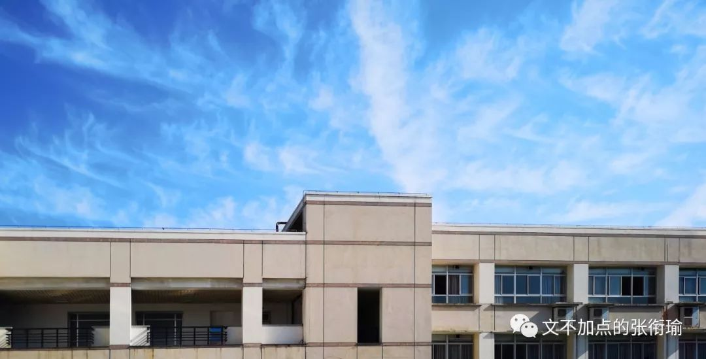
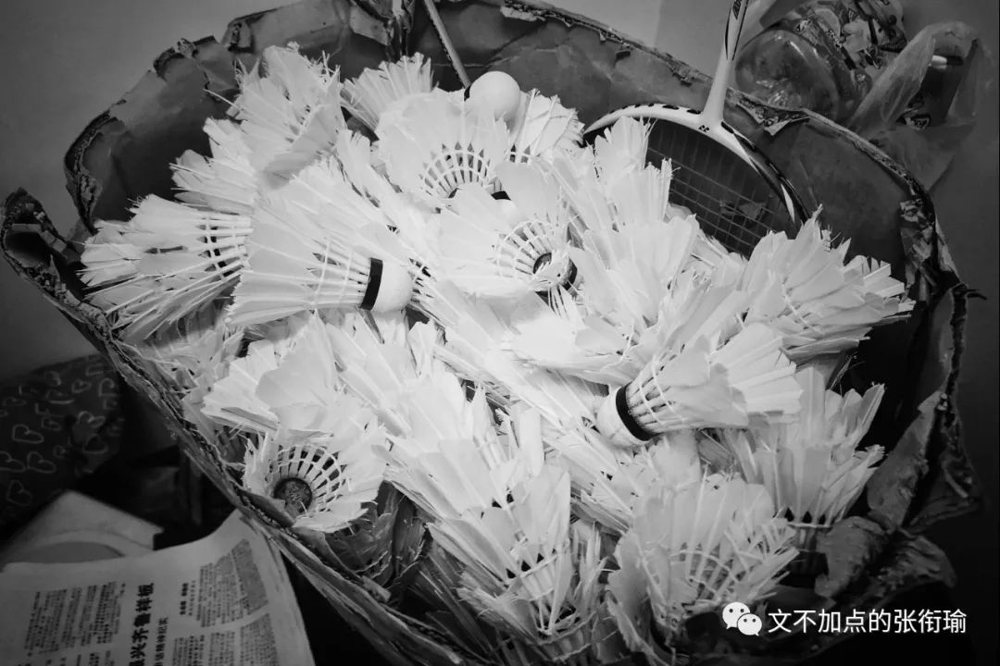
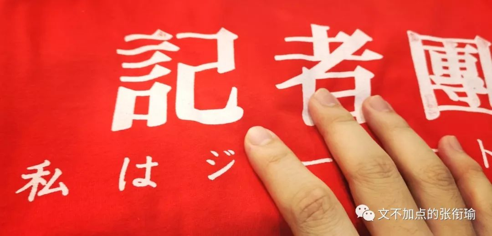
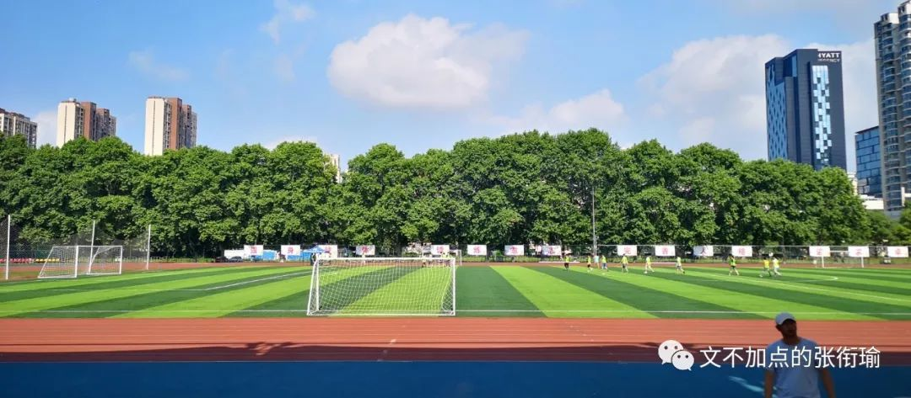
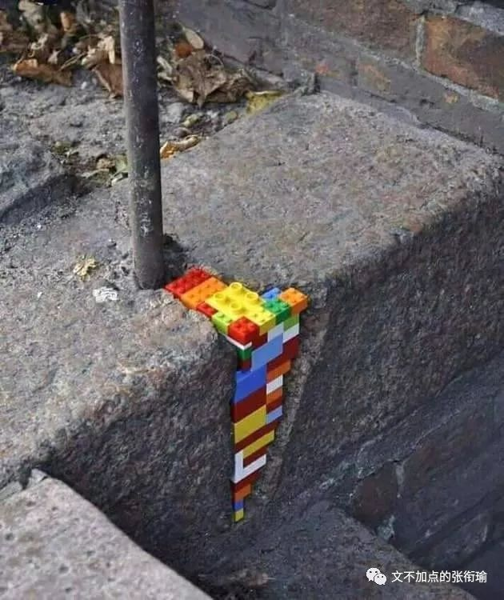
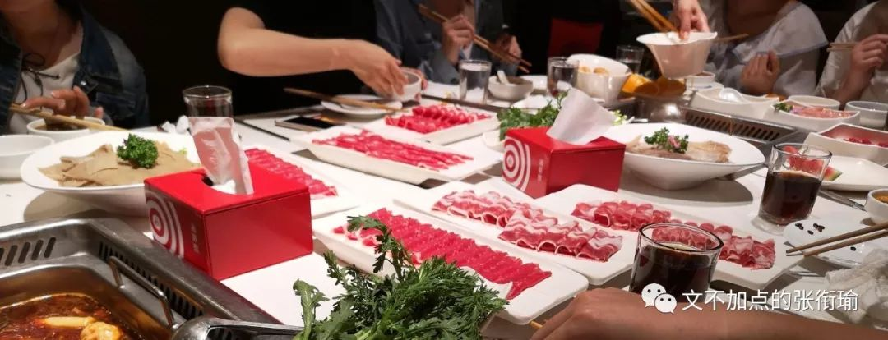
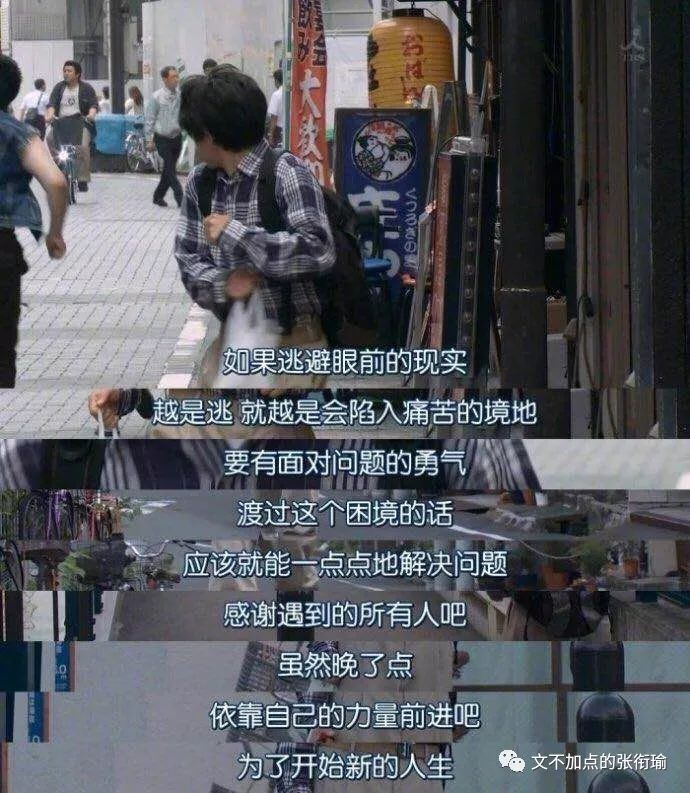

张衔瑜的第97篇推文
共计3842个字
毕业这么宏大的话题，我是不敢轻易打开话匣子的。小学、初中、高中、本科，尤其在本科，几乎每一年都要送几次老，仿佛自己毕业了很多次的样子。有好多人，是在毕业的时候才认识，而认识了不久，就已经只能看着以后江湖再见。

我有时候会觉得我熬夜的习惯，很有一部分是小时候和爸妈一起用DVD拿着光碟看电视剧的时候培养起来的。那时候有一部剧叫做《人间正道是沧桑》，大概是江苏卫视拍的群相电视剧，讲的是从黄埔三期那个年代开始，湖南醴陵的杨氏一家，信仰着不同主义，如何在风雨飘荡的几十年间直到新中国建立。
第一部分，是主角杨立青从黄埔三期毕业，同班同学有一位从湘雅医学院退学过来的谢雨时。毕业那天，大家述说自己之后的打算，屏幕上出现了一行字，大意为“自此之后，两人的再次相见已是七年之后的中条山战场上，当时谢雨时已经生命垂危。”
昨晚姬哲湍送老晚会过完，还在佯装镇定地拾掇桌子。在我那一届正式招新的时候，我还不知道有姬哲湍这个组织，甚至没有看过稿件，自然也就没有去。而看了朋友在大一那年四月份推的两篇稿子之后，我想想要不要努力，加入这个部门？
为此我特意翻了我加入姬哲湍的时候，参加完第一个活动——送老晚会之后，写下的一段日记：
要说毕业季最早 还是从记者团的送老开始
刚进六月 也是我在记者团刚写不久 进的第一个大型的活动就是送老 预先在启明排练过 西教工的主厅内 举行了这一届记者团的送老晚会 身着“写一篇稿”的记者团黑底白框T恤 唱着 “当某天 你若翻见 满目的书写都是新闻篇”
看着我并不熟悉的大四学长学姐 最后说着自己和记者团的所有 这么说吧 便是一个自己还不太熟悉的部门 也不难感受到部门里成员的情谊 即便四年过去了 无论是在哪个时期和这个团队有着怎样的交集
也就是从那个时候开始 不为某一特定细节或是事件地 觉得自己希望在这个部门留下来
果然我留了下来，而且留到现在，这是我唯一还在的一个校级组织。
那么我学会了什么、我得到了什么、我牺牲了什么、我认识了谁、我帮助了谁、谁帮助了我，这些都不重要。岁月是平等的，而世界是如此的广袤。
晚会之后，我们几个人就出去小聚。十一点半从西边烧烤店出来，挤着西小缝回了紫菘。
一些同学住在韵苑，剩下我们就在紫菘大屏幕底下，听着他们谈笑的声音越来越远，看到背影消失在紫菘路口的转角。

我和朋友说：“也许有的人，这一次看他们回去，就是最后一次见了吧。”
朋友笑着要我不要太感伤，自己却开始回忆起了从进校到现在的改变。“以前都在想，他们是怎么找到报社的实习呀？我觉得自己什么资源都没有。”
而现在，曾经几乎无知得只会羡慕的我们，现在也成为了当时自己羡慕的样子——或许也正被人羡慕着，这样地想着。羡慕并不需要一个多么具体的事情，也许是实习多、成绩好、会拉小提琴、会烧一手蚝油凤爪、甚至仅仅只是到了那个年纪。
昨天才觉得，毕业的时候道一声“珍重”，这么轻、钠么重。
烟花在空中爆鸣之后，从快速的爆开，因为燃料耗尽而迟滞在空中。那感觉，就像在那一瞬间，刹那之间让时间变慢了。如果问我有什么遗憾，那我会说，没有什么遗憾；但是如果说，自己的本科生活圆满了，又似乎并没有。
我甚至越来越感觉，自己对时间的态度有所模糊。昨天是周几？今天是几月几号？甚至有时候我想起自己的年龄，我恐惧得要动笔，要列竖式算一算我今年多少岁了。各种荒唐的、诡异的、正常的、宏大的、愚昧无知的、杳无音讯的事情，我大多经历过，或者我已经脑内把事情都走完了一遍。
我们是长大了，还是老于世故了？是苟活了，还是成熟了?

早晨在紫菘美食屋吃早餐，我还在拌面的时候，一个女生甩了一个馕饼在我对面。坐下来咬过几口之后，兴许是觉得太干了，放下馕饼去买了杯豆浆回来。
自从大一军训之后，我就对在任何地方席地而坐都没有了心理障碍，并且觉得很自在。我参加的另一个组织，一支排球队。为了去喝队内脱单的队员，给队里买的奶茶，我在排球场坐下和大家说着聊着。Didactic，说教是没有必要的，我不太愿意不分场合地，逢人便宣扬着我的斗战胜佛观。既然大家都是，因为自己和生活长期厮打而最后形成的一种处世方法，那也就没有道理给别人以如何的建议、说话。
举杯示意向新人~
瞿秋白在《多余的话》中提到了这样一段话：
话既然是多余的，又何必说呢？已经是走到了生命的尽期，余剩的日子，不但不能按照年份来算，甚至不能按星期来算了。就是有话，也是可说可不说的了。
但是，不幸我卷入了“历史的纠葛”――直到现在，外间好些人还以为我是怎样怎样的。我不怕人家责备、归罪，我倒怕人家“钦佩”。但愿以后的青年不要学我的样子，不要以为我以前写的东西是代表什么主义的。所以我愿意趁这余剩的生命还没有结束的时候，写一点最后的最坦白的话。
“一为文人，便无足观”，――这是清朝一个汉学家说的。的确，所谓“文人”正是无用的人物。这并不是现代意义的文学家、作家或是文艺评论家，这是吟风弄月的“名士”，或者是……说简单些，读书的高等游民。他什么都懂的一点，可是一点没有真实的知识。正因为他对于当代学术水平以上的各种学问都有少许的常识，所以他自以为是学术界的人。可是，他对任何一种学问都没有系统的研究、真正的心得，所以他对于学术是不会有什么贡献的，对于文艺也不会有什么成就的。
自然，文人也有各种各样不同的典型，但是大都实际上是高等游民罢了。假如你是一个医生，或是工程师，化学技师……真正的作家，你自己会感觉到每天生活的价值，你能够创造或是修补一点什么，只要你愿意。就算你是一个真正的政治家罢，你可以做错误。你可以坚持你的错误，但是也会认真地为着自己的见解去斗争、实行。只有文人就没有希望了，他往往连自己也不知道究竟做的是什么！
“文人”是中国中世纪的残余和“遗产”――一份很坏的遗产。我相信，再过十年八年没有这一种知识分子了。
不幸，我自己不能够否认自己正是“文人”之中的一种。
我对于毕业这件事，一样认为是很有悲剧色彩的。
最早进球队的时候，我其实有想做一个好的blocker，副攻、拦网手，因为身高足够高，但实际技术也就一般般。后来因为机缘巧合也好、自己认知也罢，逐渐成了核心二传、成了要带队燥动的队长。
第一年，我们送老队长去了同济，遥祝老老队长去中科院读博。后来见老队长，还是从北京实习回来，晚上十二点半我在汉口搭车去同济，临时在他们的寝室里。倒是有同济的老队员还很熟识，一起约饭、约训练、约话剧。有人脱单了还少我一餐脱单饭，偏偏我又很记仇。
第二年，我们送了一些队员去同济，送了一些队员去重医。有两个队里的成员，去了重医之后在一起了，今年五一回主校区，就真的成了那一段时间里最开心最开心的事情。
铁打的营盘，流水的兵。不知道在多少地方留下了这一句话。今年送完了之后，明年就会到我自己了吧。

毕业，就是一个可以预知的猝死。
你明确地知道在哪一天、明确知道每年都有这么一天、明确知道谁会离开。就似乎这是一个节点。我并不过分地说，一定在毕业之后就会如何。但很明显地是，一些人在很久之后遇到了，依然会觉得没有变、很是亲切；还有一些人，却只是每天在朋友圈偷了你的沙雕图之后傻笑，然后在下次见面的时候笑话你，但平常害怕得连赞都不想点。倘若没有下次见面，那也就没有笑话一说。
这所有的一切，令人觉得不真实。明明我们的例会、我们照常的训练，还有那么多的活动要去、还有多少的串串要吃。也不尽然。我有很强烈的不舍吗？没有。因为我甚至都还没有好好接受，有一些人即将离开的这一个现实。

最近在看1984，刚刚看完中文版的，但有些翻译可以见得的是译者费了很大的力气翻译政治讽喻小说，可依然不好。准备过两天开始读英文版的，不过中文的，也已经很令人震惊了。
这本书总在有审查、删节的时候被营销号拿出来鸡毛当令箭，被描述为反乌托邦也不那么社会主义的小说。可事实上，奥威尔在资本主义世界被迫害，恰恰是因为他是一名共产党员。知道这一点，就不知道比营销水军们强到哪里去了。极权政治之下，一个明显的特征即是——无常。朝不保夕，永远不知道，这一次之后会不会就不再有。
佛家劝诫俗人说，应该对生命抱有敬重、对所见与所得有珍惜。今年自三四月份在外游荡之后，五月我真正端起相机出学校扫街的，仅仅只有一次——在宝岛公园。而五月，今天就要结束了。
阶段，意味着一段一段地时间里，特别、令自己意外地，会着迷、沉迷、沉湎于某一件事。也许过后觉得也没什么，也许当时也觉得没什么。群魔乱舞之下，只有雪在认真地被人踩实、融化，流觞、直到时间也被拖走。
这一次毕业季的最开始，是硕士生师姐的毕业聚餐。前一天大家还在好好的聚会，晚上在海底捞晚餐过。第二天早上，便看到师姐画着重重的眼影来实验室开组会。师姐说是昨天哭过，眼睛有些肿。不好意思地为了遮住，也许在实验室久了也有些生疏，就显得眼影有些奇怪。

兴许这次毕业季，还会有一场，是送我在大学加入的第一个组织。当然那也是我唯一主管了的校级组织，也是第一次，解散一个组织。组织可以解散，但是毕业之后，再可以见得的，人也会不见、变少、没有、散落。
我依然有些期待见到他们，我很想知道现在到底大家在做什么、以前的那些还有没有留下些什么。但，事实上，我很怕知道。
好吧，其实送毕业的时候，笔法也越来越乱。很多小的、细碎的、我不知道从哪里冒出来的、想到的林林总总，都出现了出来。我想说的说完了、没有说完，至此也不是那么重要。于是有些人端起了酒杯、有些人点上了烟，有些人给钢笔注满了墨水又放掉，有些人在公众号写着碎碎念的小文。

青山横北郭，白水绕东城。
此地一为别，孤蓬万里征。
浮云游子意，落日故人情。
挥手自兹去，萧萧班马鸣。